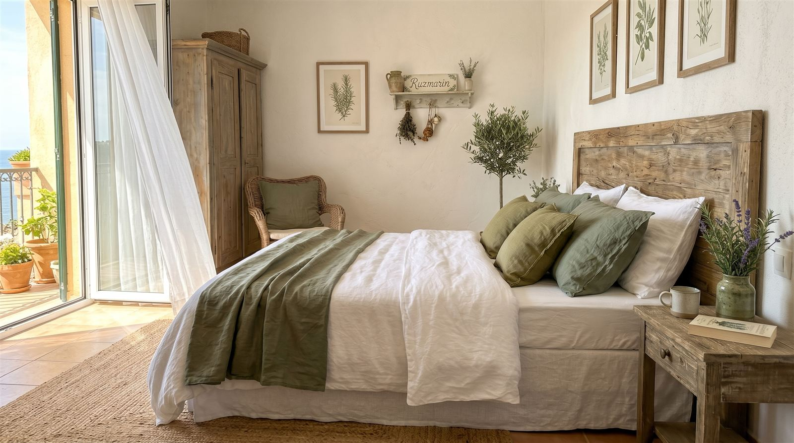
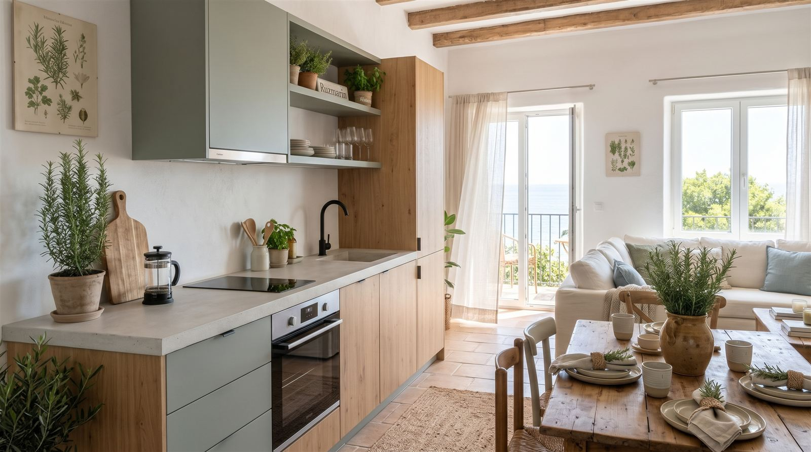
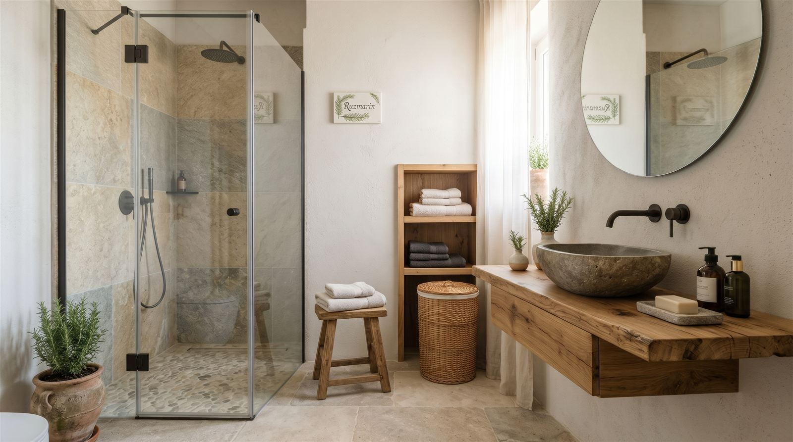
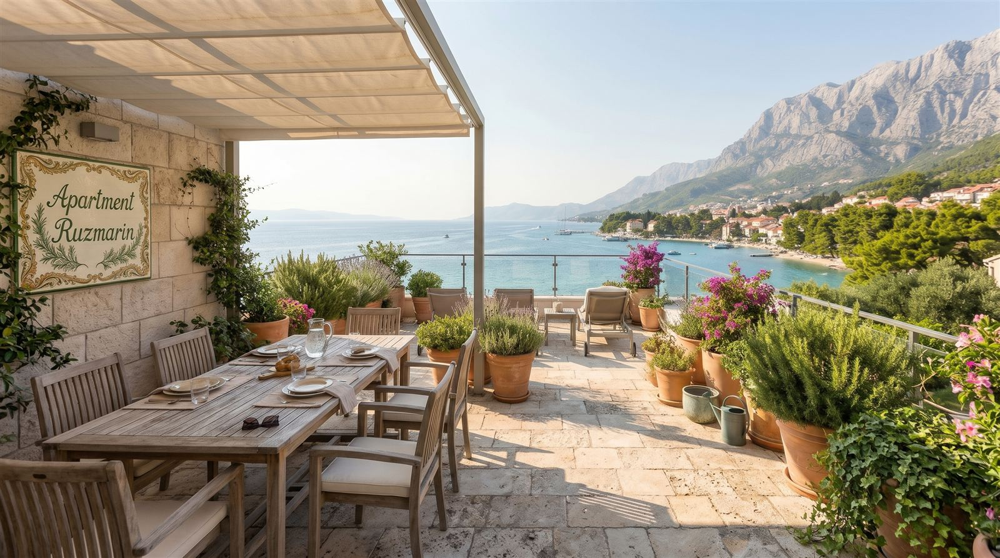

Apartman Ružmarin
Naš najveći apartman, za do šest osoba





O apartmanu
Ružmarin je naš najveći apartman: 80 m² na drugom katu, s tri spavaće sobe i dvije kupaonice. U njemu može boraviti do šest osoba.
S prostrane terase pruža se pogled na more i Biokovo. Zbog veličine je odličan izbor za veće obitelji ili dvije obitelji koje putuju zajedno.
Osnovni podaci
- Broj osoba: 6
- Površina: 80 m²
- Spavaće sobe: 3
- Kupaonice: 2
- Kat: 2. kat
- Udaljenost od plaže: 150 m
Oprema
- Klima u svim prostorijama
- Besplatan Wi-Fi
- Opremljena kuhinja
- TV
- Terasa s pogledom na more
- Parkirno mjesto
- Posteljina i ručnici
- Perilica rublja i posuđa
Cijene 2027.
| Predsezona | Glavna sezona | Posezona |
|---|---|---|
| 90 € | 160 € | 95 € |
Cijena po noćenju za cijeli apartman. Minimalni boravak 3 noći (u glavnoj sezoni 5). Cijeli cjenik